Ogni contributo verifica fonti primarie e indica cosa cambia per il destinatario. Mai marketing, mai pareri travestiti.
Le ferie maturate e non fruite dai dipendenti pongono un problema spesso trascurato: il versamento dei contributi INPS sul relativo controvalore. Il nodo riguarda quando l'imponibi…
Un calcinaccio o un frammento di balcone che precipita su un'auto parcheggiata apre una domanda ricorrente: chi paga? La risposta non è univoca. Dipende dalla natura dell'elemento …
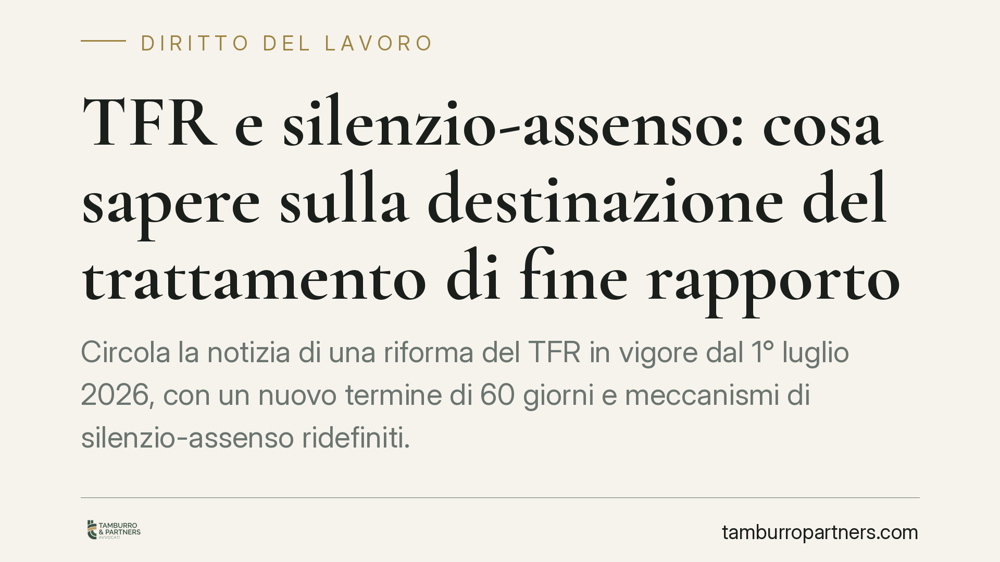
Circola la notizia di una riforma del TFR in vigore dal 1° luglio 2026, con un nuovo termine di 60 giorni e meccanismi di silenzio-assenso ridefiniti. Allo stato non risulta una fo…
Nessuno è obbligato a concludere un contratto: fino alla firma le parti restano libere. Ma questa libertà non è assoluta. Chi abbandona una trattativa avanzata, senza ragione e dop…
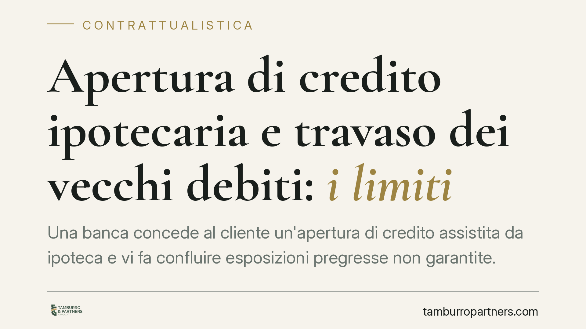
Un cliente con un conto in rosso accetta una nuova apertura di credito garantita da ipoteca. Ma quel debito pregresso può essere semplicemente "travasato" sulla nuova linea? La giu…
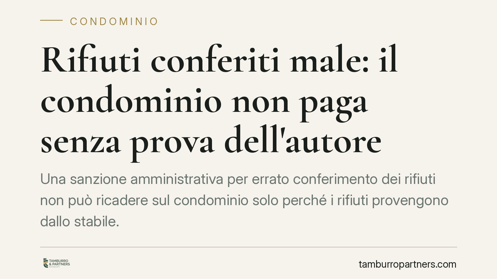
Una sanzione amministrativa per errato conferimento dei rifiuti non può ricadere sul condominio solo perché i rifiuti provengono dallo stabile. Lo ribadisce il Tribunale di Siracus…
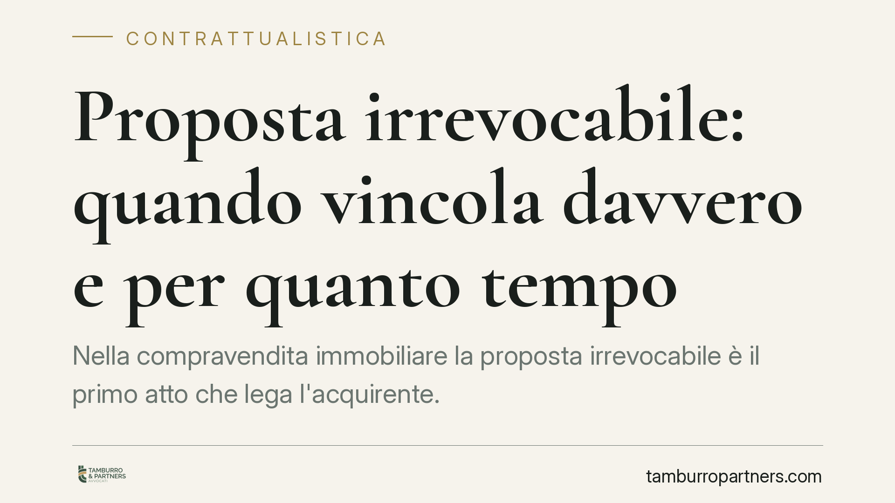
Nella compravendita immobiliare la proposta irrevocabile è il primo atto che lega l'acquirente. Ma quando vincola realmente e per quanto tempo? Il termine di scadenza, la caparra e…
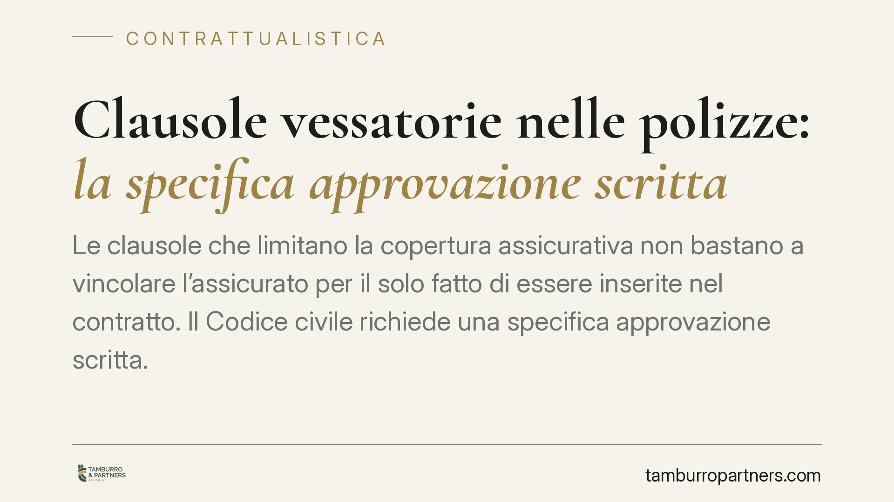
Le clausole che limitano la copertura assicurativa non bastano a vincolare l'assicurato per il solo fatto di essere inserite nel contratto. Il Codice civile richiede una specifica …
Il Forum del Terzo Settore di Catania ha sottoscritto un Protocollo di Rete per il reinserimento socio-lavorativo delle persone detenute, insieme ad Amministrazione Penitenziaria, …
A Roma la terza edizione del percorso nazionale di confronto promosso da ASC Nazionale APS riporta al centro il Servizio Civile Universale e il ruolo del Terzo Settore come infrast…
Nel supercondominio la gestione delle spese comuni e la designazione dei rappresentanti di edificio generano contenzioso ricorrente. Due profili meritano chiarezza: la legittimità …
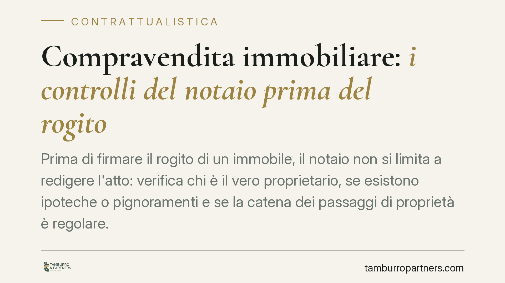
Prima di firmare il rogito di un immobile, il notaio non si limita a redigere l'atto: verifica chi è il vero proprietario, se esistono ipoteche o pignoramenti e se la catena dei pa…
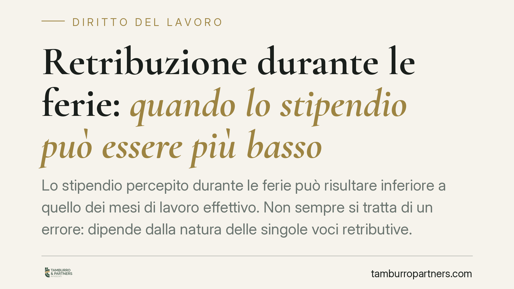
Lo stipendio percepito durante le ferie può risultare inferiore a quello dei mesi di lavoro effettivo. Non sempre si tratta di un errore: dipende dalla natura delle singole voci re…
Acquistare casa è spesso l'investimento più rilevante di una vita, ma firmare il preliminare senza controlli preventivi espone a rischi pesanti: ipoteche occulte, abusi edilizi, vi…
Cambiare lavoro pone una domanda spesso trascurata: che fine fa il fondo pensione complementare? La normativa consente di trasferire la posizione tra forme diverse senza azzerare a…
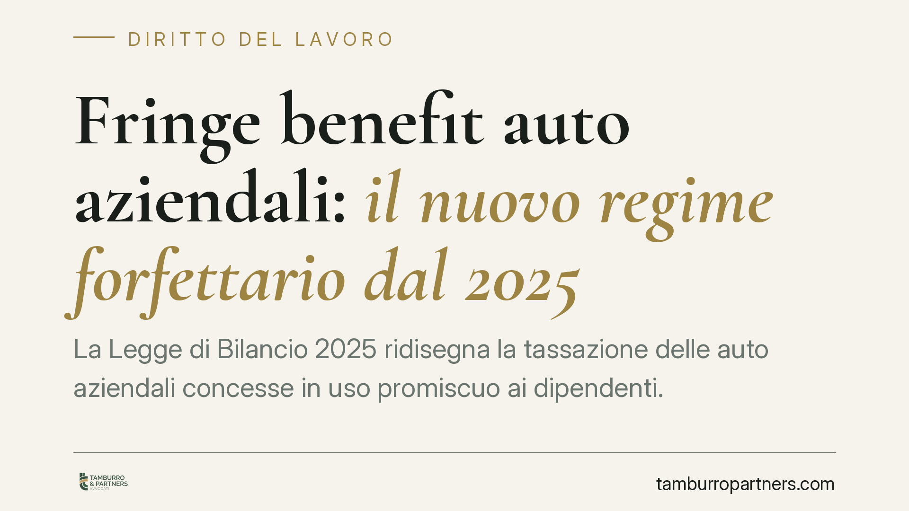
La Legge di Bilancio 2025 ridisegna la tassazione delle auto aziendali concesse in uso promiscuo ai dipendenti. Per i veicoli immatricolati e assegnati dal 1° gennaio 2025 il fring…
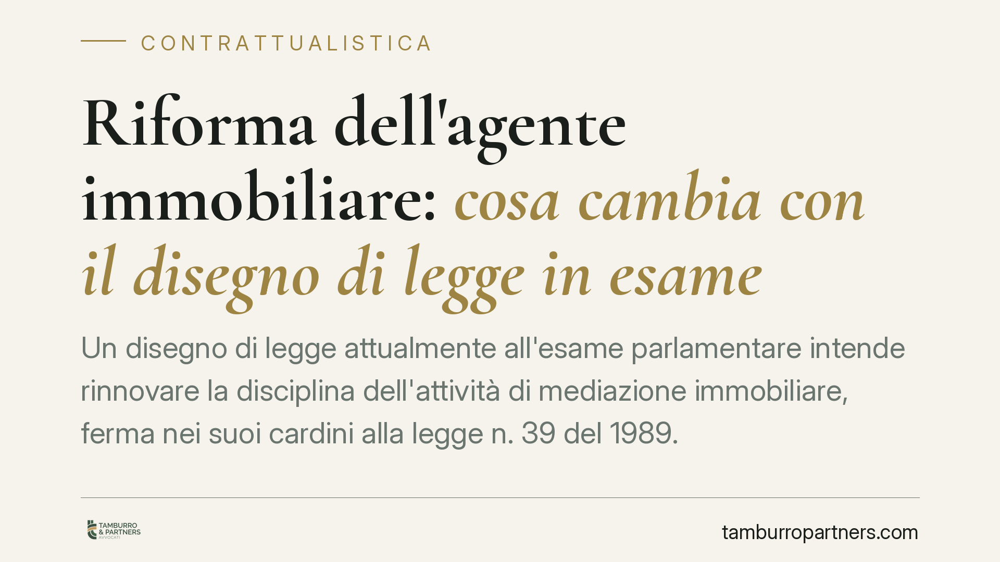
Un disegno di legge attualmente all'esame parlamentare intende rinnovare la disciplina dell'attività di mediazione immobiliare, ferma nei suoi cardini alla legge n. 39 del 1989. Tr…
Un trasferimento deciso dal datore di lavoro senza valide ragioni può essere contestato. Ma il dipendente può legittimamente rifiutarsi di prestare servizio nella nuova sede? La Ca…
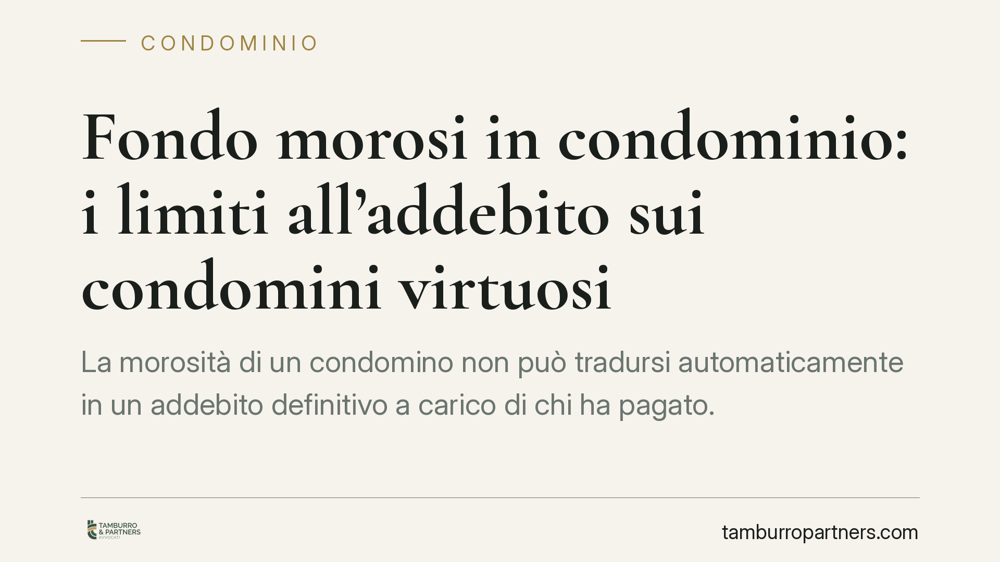
La morosità di un condomino non può tradursi automaticamente in un addebito definitivo a carico di chi ha pagato. La giurisprudenza distingue tra anticipazione temporanea delle quo…
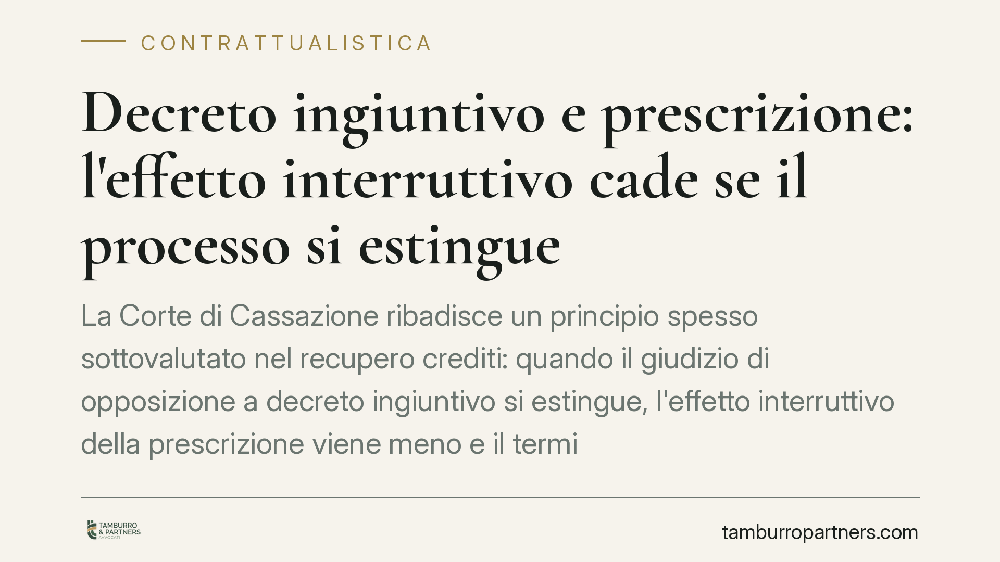
La Corte di Cassazione ribadisce un principio spesso sottovalutato nel recupero crediti: quando il giudizio di opposizione a decreto ingiuntivo si estingue, l'effetto interruttivo …
Un'ordinanza del Tribunale di Lagonegro torna su un punto cruciale: la denuncia di successione è un adempimento fiscale, non prova l'accettazione dell'eredità. Senza questa, gli er…
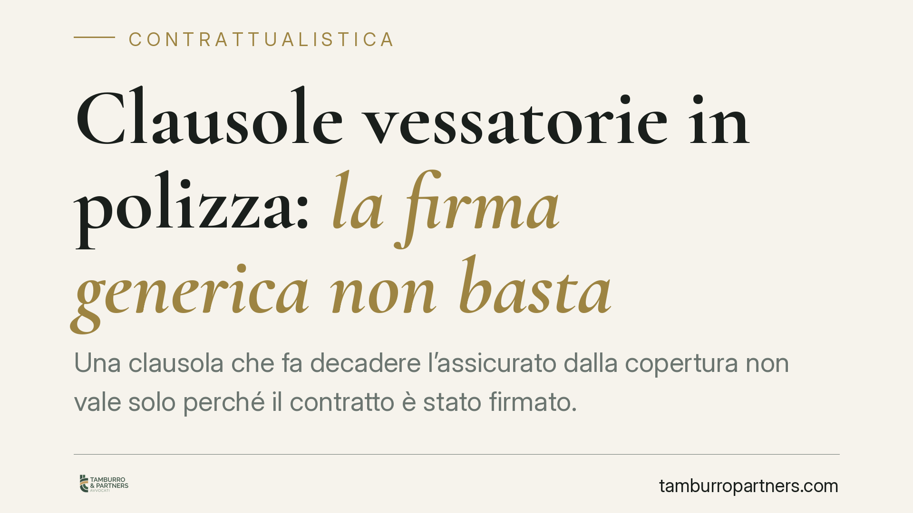
Una clausola che fa decadere l'assicurato dalla copertura non vale solo perché il contratto è stato firmato. La Cassazione torna sul tema dell'approvazione specifica delle clausole…
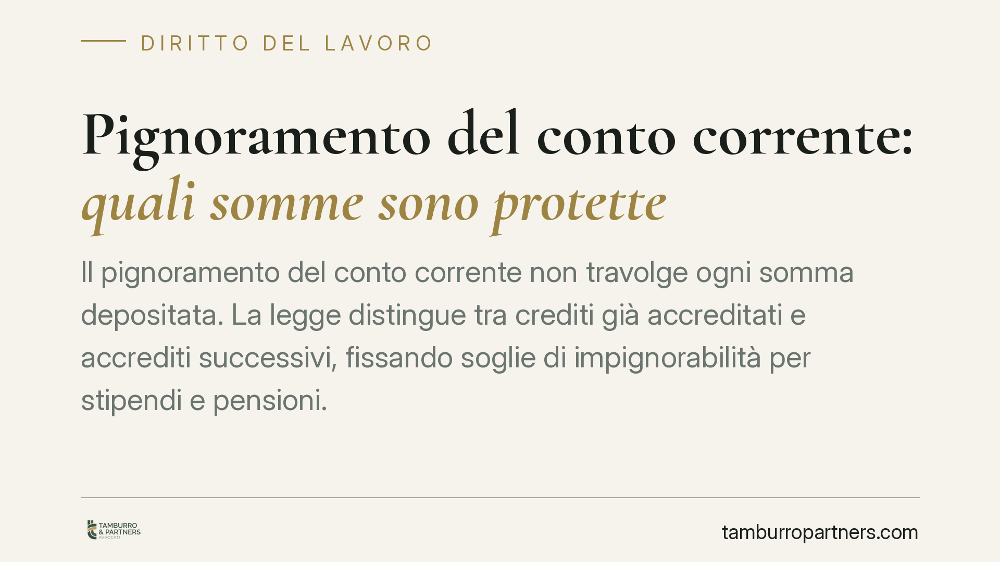
Il pignoramento del conto corrente non travolge ogni somma depositata. La legge distingue tra crediti già accreditati e accrediti successivi, fissando soglie di impignorabilità per…
Il Tribunale di Trento ha riconosciuto alla Cgil la legittimazione ad agire contro un annuncio di lavoro discriminatorio diffuso da uno chef stellato, pur in assenza di una vittima…
Chi cambia lavoro o settore si chiede spesso che fine faccia il capitale versato nel fondo pensione. La regola di base è chiara: il montante accumulato appartiene al lavoratore e p…
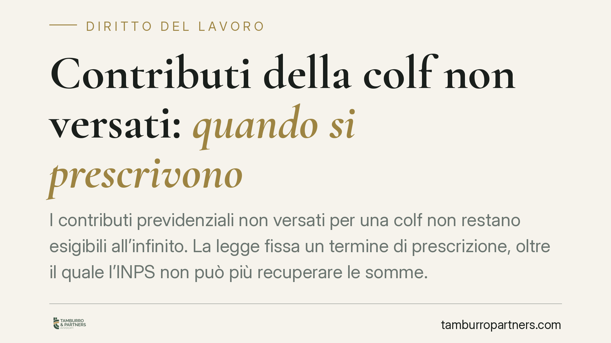
I contributi previdenziali non versati per una colf non restano esigibili all'infinito. La legge fissa un termine di prescrizione, oltre il quale l'INPS non può più recuperare le s…
Lo scorrimento delle graduatorie nei concorsi pubblici non scatta in automatico. Resta una scelta dell'ente, che però non è libera: a graduatoria ancora valida, indire un nuovo con…
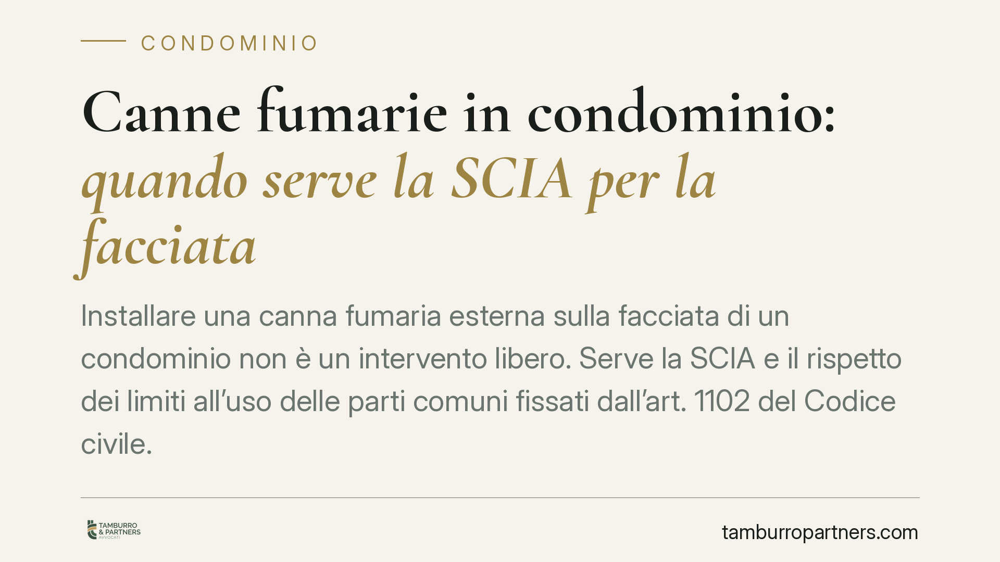
Installare una canna fumaria esterna sulla facciata di un condominio non è un intervento libero. Serve la SCIA e il rispetto dei limiti all'uso delle parti comuni fissati dall'art.…
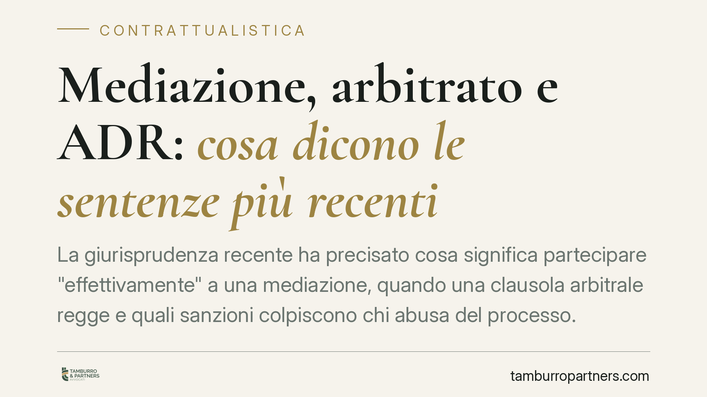
La giurisprudenza recente ha precisato cosa significa partecipare "effettivamente" a una mediazione, quando una clausola arbitrale regge e quali sanzioni colpiscono chi abusa del p…
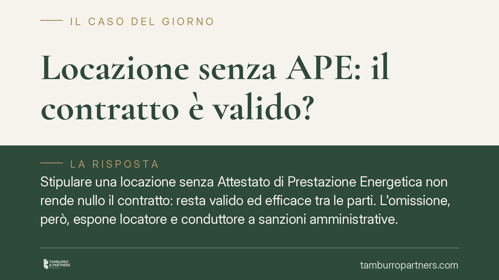
Stipulare una locazione senza Attestato di Prestazione Energetica non rende nullo il contratto: resta valido ed efficace tra le parti. L'omissione, però, espone locatore e condutto…